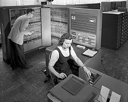
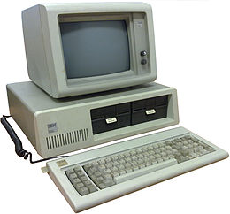

IBM
International Business Machines Corporation (IBM, bijgenaamd Big Blue) is een bedrijf dat bij het grote publiek vooral bekend is vanwege de eerste IBM Personal Computer. Tot de kernactiviteiten van IBM behoren het ontwerpen en verkopen van computerhardware, -software, -technologie en dienstverlening in de IT-sector. Het bedrijf wordt ook wel Big Blue genoemd, refererend aan de grote macht van het bedrijf en het blauwe logo. De eerste Nederlandse vestiging werd in 1940 geopend.[2] Het hoofdkantoor bevindt zich in de stad North Castle in de staat New York.
IT-markt
IBM is een van de grootste IT-bedrijven met wereldwijd meer dan 350.000 werknemers en een omzet van US$ 79,6 miljard (2018). IBM is actief in meer dan 160 landen. Al 19 jaar op rij registreert IBM het wereldwijde recordaantal patenten door grote investeringen in (fundamentele) wetenschap en onderzoek.
Gebieden waar dit bedrijf zich mee bezighoudt zijn onder andere:
- Cloud services
- Kunstmatige intelligentie
- Business and IT Consulting
- Business Process Outsourcing
- Outsourcing Services
- Financiering
- IT-Projecten
- Hardware
- Software
- Onderhoud hardware en software
- Applicatieontwikkeling en onderhoud
- Educatie
- Business Continuity and Recovery Services
De pc-tak van IBM is in 2004 overgedaan aan het Chinese Lenovo, samen met de op het Intel-platform gebaseerde servers (Netfinity, e-Servers).
Geschiedenis
In 1896 richtte Herman Hollerith, uitvinder van een gegevensverwerkende machine op basis van ponskaarten, de Tabulating Machines Company op. In 1911 kwam in de Amerikaanse staat New York de Computing Tabulating Recording Company (CTR) tot stand. Dit was een fusie van drie bedrijven: Holleriths ponskaartenbedrijf, de Computing Scale Company of America, waar weegschalen en vleessnijmachines werden geproduceerd, en ten slotte de International Time Recording Company, een producent van industriële uurwerken. In 1924 werd het bedrijf omgedoopt tot International Business Machines.
In 1920 kwam de Tabulator op de markt, een machine die ponskaarten kon printen. In 1924 werd het systeem gebruikt om de gegevens van 26 miljoen arbeiders op te slaan, in het kader van de Social Security Act van Franklin Roosevelt. Uiteraard werden ook -mechanische- ponskaartleesmachines ontwikkeld. Het deel van de organisatie dat onder de naam Hollerith opereerde, was echter ook verantwoordelijk voor de ponskaartsystemen in de concentratiekampen in nazi-Duitsland. IBM collaboreerde dus met nazi-Duitsland, een zwarte bladzijde uit de geschiedenis van het bedrijf.
Gedurende de jaren veertig begon men te werken aan elektronische rekenmachines met behulp van elektronenbuizen. Omstreeks 1955 werd het ringkerngeheugen ontwikkeld voor data-opslag, en in 1956 volgde de eerste harde schijf (de RAMAC).
In 1957 introduceerde IBM de wetenschappelijke programmeertaal Fortran.
In 1959 kwam met de IBM 1401 de eerste mainframe-computer op de markt en begon de bedrijfsautomatisering ingang te vinden, aanvankelijk op basis van ponskaarten.
In 1961 volgde een vernieuwing op het gebied van de elektrische schrijfmachine: de hamertjes werden door een verwisselbaar bolletje (IBM-bolletje) vervangen, waarmee diverse lettertypes en zelfs wiskundige symbolen konden worden getypt. Dit letterbolletje was een voorloper van het margrietwiel. Er stonden 88 tekens op en het kon in alle richtingen ronddraaien om de ingetypte letters op het papier te zetten, met een maximale snelheid van 15 tekens per seconde. Het bolletje verving de traditionele letterhamertjes, die bij snel typen nog al eens met elkaar in de knoop konden raken. Het bolletje kon gemakkelijk vervangen worden om met een ander lettertype te kunnen schrijven, terwijl bij een klassieke typemachine helemaal geen andere lettertypes mogelijk waren. Dit type schrijfmachine werd vanaf circa 1962 onder meer in Amsterdam geproduceerd.[3]
In 1967 kwam de diskette op de markt, en in 1970 de streepjescode. De volgende stap was de IBM Personal Computer, waarvan de eerste versie in augustus 1981 werd geïntroduceerd. Dit was een kleine computer voor de zakelijke markt met een 16-bit microprocessor van Intel, de 8086/8088 en PC-DOS 1.0, het eerste besturingssysteem van Microsoft. Dit type computer zou de standaard worden in het zakelijk gebruik. De vrij vlot daarna geïntroduceerde IBM PC XT, uitgerust met een harde schijf werd de standaard computer, waar andere bedrijven zo veel mogelijk compatibel mee wilden zijn. Een dergelijk machine vergde ongeveer een investering van ca. 10.000 gulden. Onder invloed van de nagemaakte machines van concurrenten (kloon-pc's) daalde de prijs snel. IBM zou later zelf ook een besturingssysteem voor Intel-processoren schrijven, OS/2. Dit werd (commercieel) geen groot succes.
Sinds de tweede helft van de jaren zeventig breidde IBM zijn marktleiderschap uit met midrange computers voor middelgrote bedrijven. In deze categorie is IBM nog steeds marktleider met zijn System i (i5/OS of Linux), System p (AIX of Linux) en System x (Windows of Linux)-servers.
In 1991 werden de productie en verkoop van printers ondergebracht in een aparte divisie, Lexmark. Deze werd in 1995 verkocht. In 1992 werd de ThinkPad laptopcomputer geïntroduceerd. In 1996 wist IBM-schaakcomputer Deep Blue de toenmalige schaakkampioen Garri Kasparov te verslaan.
De consultancyafdeling van het toenmalige PricewaterhouseCoopers werd in 2002 overgenomen. Wereldwijd ging het om 30.000 medewerkers, in Nederland 1700.
In december 2004 verkocht IBM de pc-divisie aan de Chinese computerbouwer Lenovo. Lenovo betaalde $650 miljoen cash en $600 miljoen aan eigen aandelen voor de divisie. Aanvankelijk bestond er onzekerheid of de Amerikaanse overheid de overname goed zou keuren; de overheid dacht dat Lenovo misschien té gevoelige Amerikaanse technologie in handen zou krijgen. Voorstanders van de overname zeiden echter dat elk bedrijf over computertechnologie kan beschikken en dat Lenovo allang zelf de technologie bezat. Uiteindelijk werd op 9 maart 2005 de deal door de Committee on Foreign Investment in the U.S. (CFIUS) goedgekeurd en is deze overname een feit. Op 6 juni 2005 is IBM, in samenwerking met de École Polytechnique Fédérale de Lausanne (EPFL), gestart met het Blue Brain Project. Doel van het onderzoek was een gedetailleerd model van de neocortex maken.
In 2008 werd voor het eerst de grens van de Petaflop doorbroken: een supercomputer wist 1015 berekeningen per seconde te volvoeren en in 2011 wist de computer Watson de tv-quiz Jeopardy! te winnen van menselijke kampioenen.
IBM heeft zijn verlieslijdende chipdivisie met bijbetaling van US$ 1,5 miljard overgedaan aan GlobalFoundries.[4] Het betrof de fabriek in East Fishkill en die in Essex Junction GlobalFoundries kreeg toegang tot de technologie en kennis van IBM en zal voor minimaal 10 jaar de levering van chips voor de IBM-systemen verzorgen. IBM leed op deze transactie, die in 2015 werd afgerond, een totaal verlies van US$ 4,7 miljard voor belastingen.[4]
Medio 2019 kreeg IBM toestemming van de toezichthouders om Red Hat over te nemen.[5] Met een overnamesom van US$ 33,4 miljard is het grootste overname in de geschiedenis van IBM en de op twee na grootste in de Amerikaanse IT-sector. Met deze acquisitie wil IBM zijn positie in de cloudmarkt versterken. IBM realiseert zo'n 25% van zijn omzet uit clouddiensten, maar is een relatief kleine speler ten opzichte van vooral Amazon.com en Microsoft.[5] Verder is Red Hat gespecialiseerd in het open-sourcebesturingssysteem Linux. Red Hat behaalde in 2018 een omzet van US$ 3,4 miljard.[5]
| Beurs | NYSE:IBM |
|---|---|
| Oprichting | Sinds 1888 werrkzaam Bedrijf sinds 16 juni 1911 |
| Hoofdkantoor | Armonk, New York |
| Werknemers | 350.600 (2018) |
| Producten | ICT |
| Omzet/jaar | US$ 79.59 miljard (2018) |
| Winst/jaar | US$ 8.72 miljard (2018) |
| Website | IBM.com |